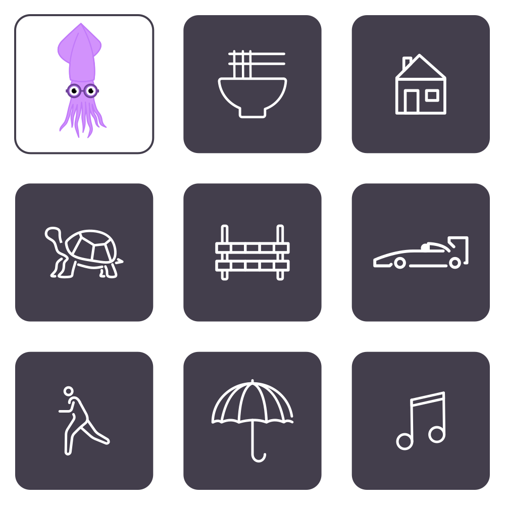

<!DOCTYPE html>
<html lang="en" dir="ltr">
  <head>
    <meta charset="utf-8">
    <title></title>
    <link href =  "./calibration.css" rel="stylesheet"/>
    <link href =  "../AppPages/main.css" rel="stylesheet"/>
    <script type = "module" src = "../Cursor/cursor.js"></script>
    <!-- <script type = "module" src = "./calibration-window2.js"></script> -->
    <!-- <script type = "module" src = "../EyeTracker/eye-tracker-window.js"></script> -->
  </head>
  <body>
    <!-- <div class = "session-frame"> -->
      <!-- <div class = "content-frame"> -->
        <!-- 
        <div class = "overlay">
          <calibration-window>
            <div name = "message">
              <div class = "center-card">
                <h2>
                  Focus on the purple dots<br />
                  to calibrate eye tracking.
                </h2>
                <div name = "run" class = "btn">
                  Start Calibration
                </div>
              </div>
            </div> -->
          <!-- </calibration-window> -->
        <!-- </div> -->
        <cursor-group></cursor-group>
      <!-- </div> -->
    </div>

  </body>

  <script type = "module">
    import {startWebcam, stopWebcam, startPredictions, stopPredictions, addPredictionListener} from "../EyeTracker2/eye-tracker.js"
    let cursors = document.querySelector("cursor-group");
    const csize = 10;

    function calibPos(time, start, end) {
      time = time / 1000;

      let y = time / 100;
      let x = (Math.cos(time) +1)/2
      let pos = start.mul(new Vector(x, y).add(end.mul(new Vector(1 - x, 1 - y)))
    }

    console.log(cursors);
    let clibrating = null;
    addPredictionListener((e) => {
      let pred = e.position;
      console.log("pred: " + pred);
      cursors.setCursorPosition(pred, "eye", "blob");

      let {innerWidth, innerHeight} = window;
      let start = new Vector(csize/2, csize/2);
      let end = new Vector(innerWidth - csize, innerHeight - csize);


      console.log(innerWidth, innerWidth);
    })

    async function startEyeTracking(){
      if (await startWebcam()) {
        await startPredictions()
      }
    }

    window.ondblclick = () => {
      startEyeTracking();
    }


  </script>

  <style>

    .my-eyes canvas {
      width: 200px;
      height: 150px;
    }
    .mouse-cursor {
      width: 10px;
      height: 10px;
      background: blue;
    }
    .session-frame {
      display: flex;
      justify-content: center;
      width: 100%;
      height: 100%;
    }
    .content-frame {
      position: relative;
      display: content;
    }
    .overlay {
      position: absolute;
      top: 0;
      left: 0;
      right: 0;
      bottom: 0;
    }
    .content-frame img{
      max-width: 100%;
      max-height: 100%;
    }

    body {
      position: fixed;
      top: 0;
      left: 0;
      right: 0;
      bottom: 0;
      width: 100%;
      height: 100%;
      margin: 0;
    }

    svg.cursor {
      position: fixed;
      width: 300px;
      height: 300px;
      user-select: none;
      pointer-events: none;
    }
    .run-btn {
      position: absolute;
      top: 50%;
      left: 50%;
      transform: translate(-50%, -50%);
      padding: 0.5em;
      border-radius: 0.5em;
      border: 2px solid black;
      cursor: pointer;
    }
    .my-eye
  </style>
</html>
